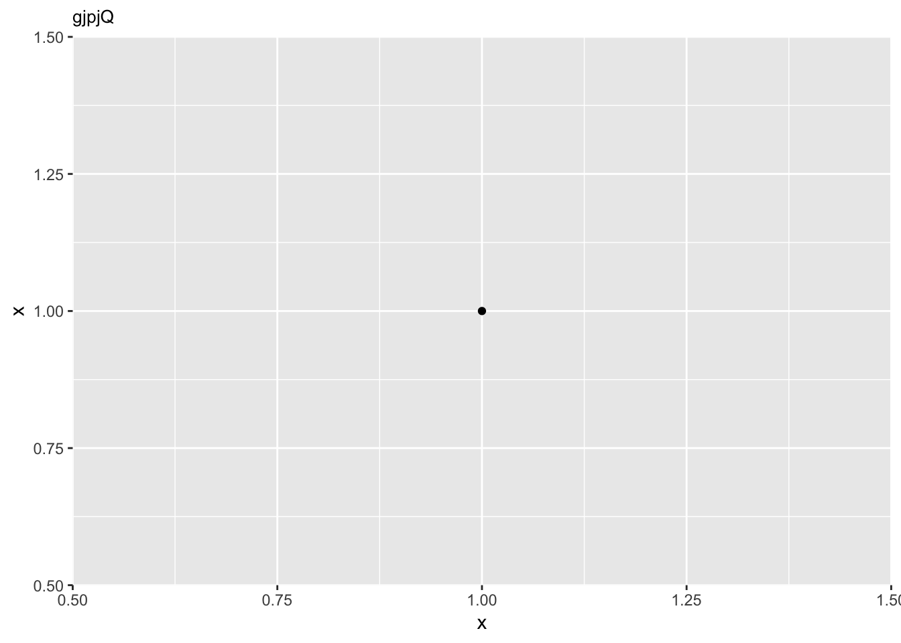
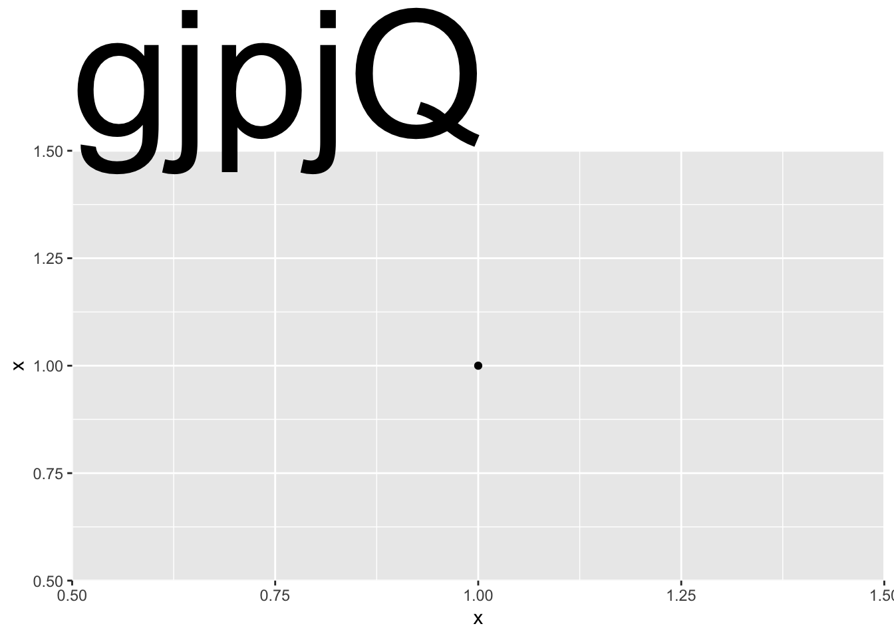

In honour of the triumphant return of reprex to CRAN, let’s revisit what I refer to as Jenny Bryan’s keys to reprex-cellence.1 The three keys are as follows:
- code that actually runs
- code that I don’t have to run
- code that can be easily run2
Our example
True to the ésprit de reprex, let’s look at a real world example to unpack why these attributes are so useful. The code shown comes from an issue filed by Claus Wilke in the ggplot2 repo, Descent heights still not right.
To be clear, “code that actually runs” does not mean that your code needs to be error-free. In fact, a reprex is a great way to show exactly what’s leading to an error. It just so happens that, in this particular case, the “error” is in what’s produced by the code.
Code that actually runs, and that can be easily run is, in essence, self-contained and minimal. Self-contained means that everything we need (packages, data) is inside of the reprex, and you really can’t get much more minimal than a ggplot2 chart that plots but a single point.3 Since the focus of the issue is descent height for the title text, that’s the only aspect that changes between the two charts (13/10 minimal af).
library(ggplot2)
df <- data.frame(x = 1)ggplot(df, aes(x, x)) + geom_point() +
ggtitle("gjpjQ") +
theme(plot.title = element_text(size = 10))
ggplot(df, aes(x, x)) + geom_point() +
ggtitle("gjpjQ") +
theme(plot.title = element_text(size = 100))
Because the example is suitably minimal, you don’t need to run the code to see the problem.
Mouse-free reprexing 🐭
If, like me, you’re lazy and run a lot of reprexes, you might want to consider making your life easier by using a keyboard shortcut for your reprexing needs. The shortcut can be anything you desire, I’m just demonstrating with the one I happen to use.

Generate reprex of selection using Ctrl + R + P
Adding a shortcut of your own is easy as can be. First, you’ll need to navigate to Modify Keyboard Shortcuts... in the RStudio IDE by way of the Tools menu.

RStudio Tools >> Modify Keyboard Shortcuts…
Once you’re in the Keyboard Shortcuts interface, find the reprex add-in names. (You can do this by searching for “reprex.” 🔎) To add a shortcut, just click in the Shortcuts column of your chosen command (in this example, reprex selection) and start typing, click Apply, and you’re good to go.

Add keyboard shortcut for “Reprex selection”
Further resources
There are lots of other excellent resources out there on how to up your reprex (or reproducible-example/troubleshooting) game:
- reprex 📦
- reprex GitHub
- The Minimal Reproducible Example Paradox by Yihui Xie
- tidyverse help: reprex
- rOpenSci community call
- Magic Reprex by Nick Tierney
- So you’ve been asked to make a reprex by Jesse Maegan
- StackOverflow: How to make a great R reproducible example? aka MCVE
- Three tips for posting good questions to R-help and Stack Overflow
- The R Inferno, Circle 9: Unhelpfully Seeking Help
reprex: the package, the point by Jenny Bryan
I take full responsibility for this disaster of a portmanteau, but the actual important information is all Jenny’s.↩
Jenny Bryan, 2017. “reprex: the package, the point.” https://speakerdeck.com/jennybc/reprex-help-me-help-you↩
As Jenny notes in the Reprex do’s and don’ts, “Use the smallest, simplest, most built-in data possible. Think:
irisormtcars. Bore me.”↩